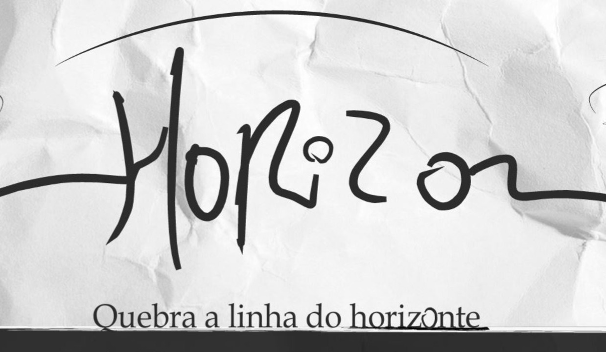
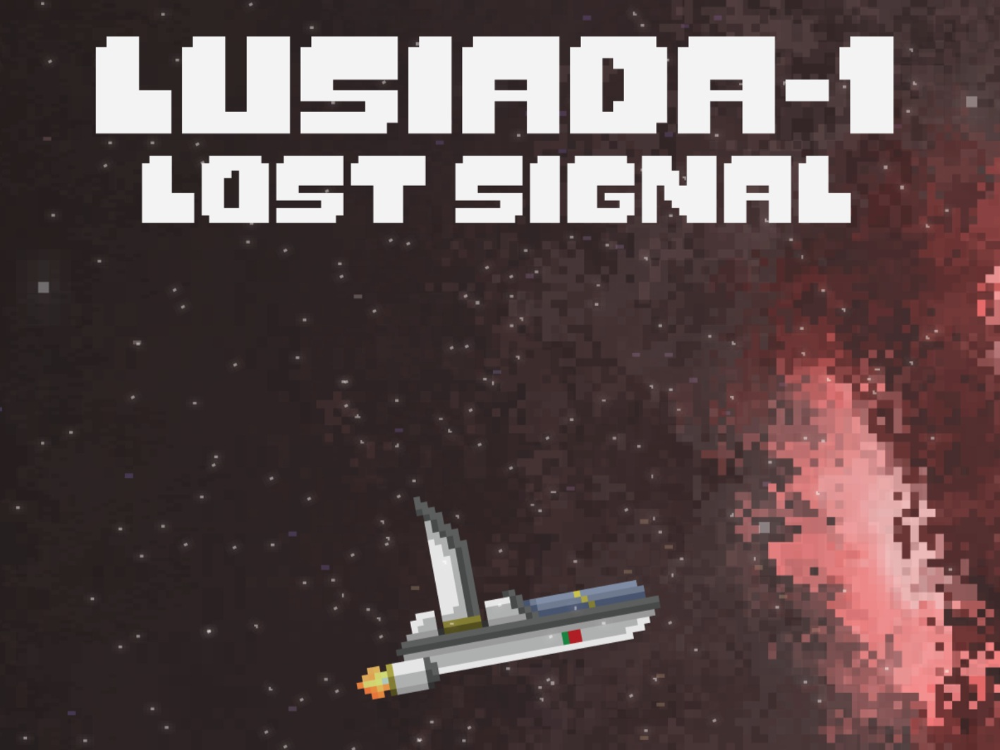
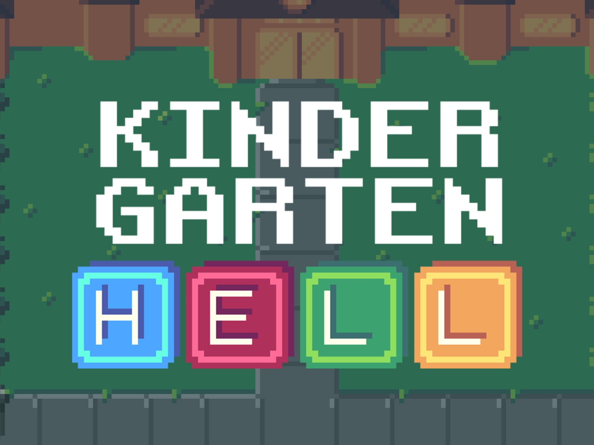
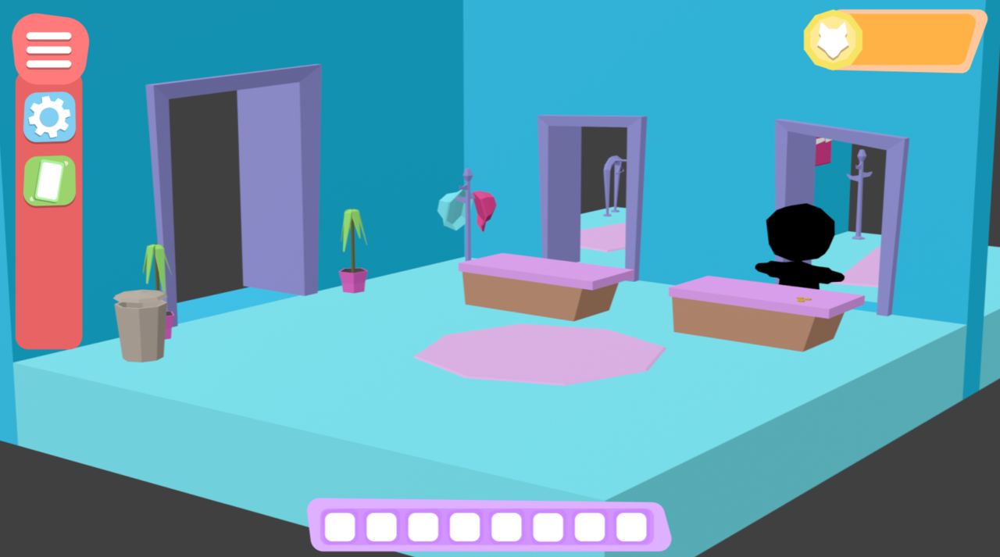

Sobre Mim:
- Sou um entusiasta do desenvolvimento 3D e experiências interativas.
- Profissional formado em sound design, como técnico de som durante 3 anos.
- Atualmente a frequentar a Licenciatura de Videojogos e Aplicações Móveis na Universidade Lusofona do Porto.
- Simultaneamente a trabalhar no setor de vendas em loja Sonae, nem regime de contrato Part-time. Também nutro gosto pela interação com pessoas, pois acredito ser uma mais-valia, até porque sem pessoas, existe um vazio.
O meu propósito é ser criativo na abordagem de comunicação sonora e 3D, como no desenvolvimento/produção das mesmas e fazer parte de uma equipa dinâmica com vontade de trabalhar em união.
Iniciei o meu percurso profissional na área de informática e vendas, mas para além de ter estudado som, tenho interesse no desenvolvimento em design de comunicação (UX/UI). Para saberem mais sobre o meu percurso profissional ou sobre mim, encontro me à disposição para conversar.
Projetos:
Estes são alguns dos projetos que desenvolvi ao longo do meu percurso académico e profissional. Cada projeto reflete a minha paixão por criar experiências interativas.
Horizon
Sobre o Projeto:
Horizon foi um projeto desenvolvido no espaço de uma semana por mim mais dois colegas de turma (Marco Santos e Lucas Lima), numa espécie de gamejam, em que o objetivo era fazer um jogo, que tivesse apenas e só uma mecânica presente.
A minha participação neste projeto consistiu em fazer o gamedesign, todo o som, e desenvolver assets 2D para a experiência. (Marco-Programador Unity, Lucas-Programador e artista 2D).
Lusíada Lost Signal
Sobre o Projeto:
Lusíada Lost Signal foi um projeto desenvolvido também no âmbito do curso com 3 semanas para o concretizar. Foi uma experiência realizada por mim, mais dois colegas de faculdade (Marco Santos e Alex Nogueira). O objetivo do jogo era unicamente contar uma história.
A minha participação neste projeto consistiu em desenhar toda a comunicação narrativa (Game-design), organização do projeto e Sound-design. (Alex-Artista 2D, Marco-Programador Unity).
KinderGarten Hell
Sobre o Projeto:
KinderGarten Hell é um jogo de estratégia desenvolvido em Godot com uma equipa de 5 colegas de faculdade (Catarina, Leonor, Tiago, Lucas). O jogo consiste em guiar as crianças, no cenário, para dentro das instalações escolares sem gastar o número total de movimentos possíveis.
A minha participação neste projeto consistiu em ser GameDesigner, preocupar me com a experiência de utilizador, documentar e apresentar o jogo ao público, fazer todo o Sound-design e ser o organizador do projeto. (Catarina e Leonor – Artistas 2D, Lucas Lima – Programador Godot, Tiago Rola – Level Designer e Auxiliar em Game Design).
Lily´s Thrift Store
Sobre o Projeto:
Lily´s Thrift Store é um simulador de compra e venda de roupa num ambiente de loja 3D. O objetivo deste projeto é simular, tambem uma linha de trabalho profissional. Usar ferramentas como Unreal, Blender, Fmod pela primeira vez e documentar e organizar tudo ao detalhe, como se fosse um trabalho para uma empresa. O projeto tem a duração de 3 meses para ser realizado com uma equipa de 4 elementos. Eu, Lucas, Adriana e Tomas.
O meu papel neste projeto consiste em ser o criador de todos os assets 3D, Sound-designer, Produtor de projeto, Animador e Líder de grupo. (Lucas-Programador Unreal, Adriana-Game-designer e Level-Designer, Tomas-UI&UX-Animador-Q&A)
Competências:
- Linguagens de programação JavaScript e C#;
- Unity e Unreal game engines;
- Modelação 3D (Blender);
- Criação vetorial em Adobe Illustrator;
- Criação e edição de som;
- Fl Studio / Fmod / Reaper;
- Experiência em Q&A e testes de Husabilidade;
- Experiência em venda de produto;
- Experiência em comunicação verbal.
Contacto:
Fala comigo: rafalusofona@gmail.com